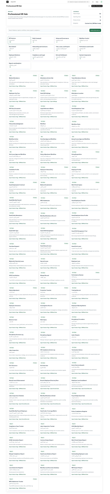

نظام تشغيل موارد بشرية سعودي
الموظف
رحلة،
لا سجل.
طبقة تشغيل عربية داخل ERPNext تربط كل قرار في حياة الموظف: من العقد الأول، إلى الحضور والراتب والامتثال، وحتى آخر مخالصة.
العقد
نوع العلاقة، الأجر، المدة، التجربة والالتزامات في مرجع واحد.
لا نريد من مسؤول الموارد البشرية أن يبحث عن الحقيقة بين عشر شاشات.
نضع الحقيقة التشغيلية
في مدار واحد.
ست محطات.
أثر واحد لا ينقطع.
اضغط على أي محطة لترى ما يملكه النظام وما يسلّمه للمحطة التالية.
قرار التوظيف
من الاحتياج إلى مرشح جاهز للعقد.
طلب توظيف واضح، مرشحون، مقابلات، قرار موثق، ثم انتقال منضبط إلى إنشاء العقد دون إعادة إدخال البيانات.
طلب توظيف · تقييم مرشح · قرار قبول
ليست فكرة.
هذه شاشة العمل.
مؤشرات اليوم، العقد، الحضور، الراتب، الوثائق والإجراءات التالية في ملف موظف شامل ومركز تشغيل واحد.
الجولة البصرية ↗
لا تقرأ دليلًا.
امشِ في مسارك.
اختر دورك، وسنعرض الخطوات التي تحتاجها فقط.
أربعة أوامر.
ثم تبدأ الرحلة.
اختر نسختك. يتغيّر الفرع فورًا وتبقى بقية الخطوات كما هي.
# جلب النسخة المطابقة
bench get-app --branch version-15 \
https://github.com/ahmadmdm/hr-saudi-arabia-erpnext.git
# التثبيت والترحيل
bench --site your-site.local install-app saudi_hr
bench --site your-site.local migrate
bench build --app saudi_hr && bench restartخطة إطلاق
لا تترك فراغًا.
- الأسبوع 01البنية
شركة، فروع، أقسام، مواقع، أدوار وصلاحيات.
- الأسبوع 02السياسات
ورديات وإجازات وعقود وتنبيهات الوثائق.
- الأسبوع 03التجربة
موظف تجريبي، حضور، إجازة، راتب ومخالصة.
- الأسبوع 04الإطلاق
تدقيق، نسخة احتياطية، تدريب، ثم توسع مرحلي.
الخطوة التالية
اجعل كل قرار
قابلًا للتفسير.
ابدأ على بيئة تجريبية اليوم، وشغّل دورة موظف كاملة قبل الانتقال إلى الإنتاج.